Изучение возможностей протокола STP и его модификаций по обеспечению
отказоустойчивости сети, агрегированию интерфейсов и перераспределению
нагрузки между ними.
Изменение
топологии и создание резервного соединения
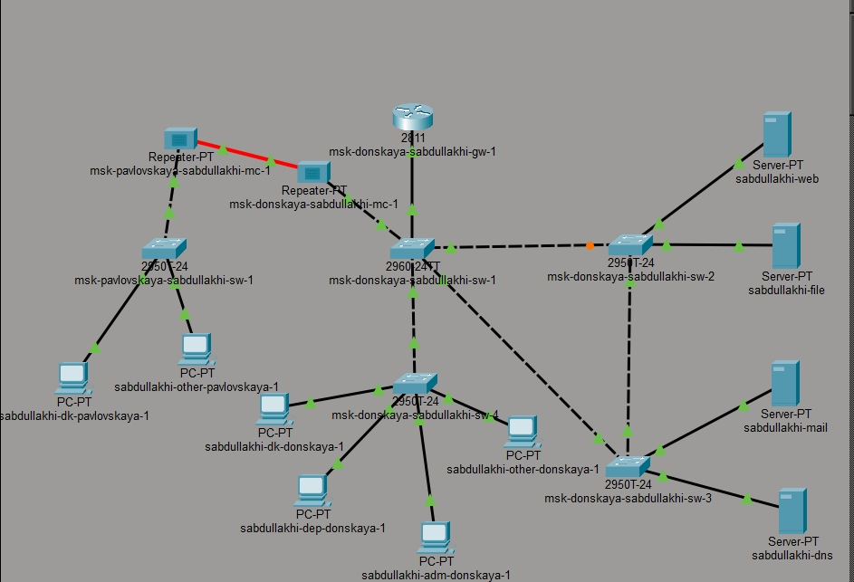
Топология сети с резервным
соединением
Проверка прохождения
ICMP-пакетов
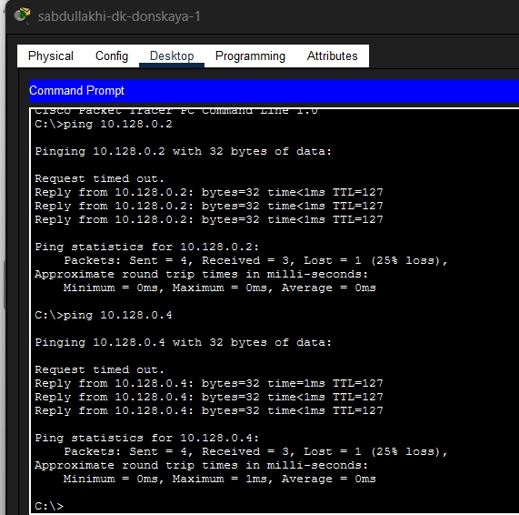
Результат пинга с
sabdullakhi-dk-donskaya-1
движение ICMP-пакетов
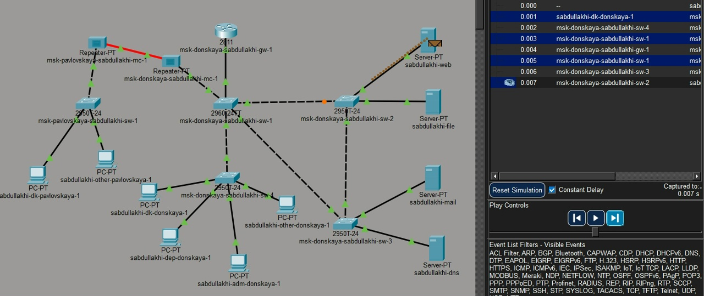
Движение ICMP-пакетов через
msk-donskaya-sabdullakhi-sw-2
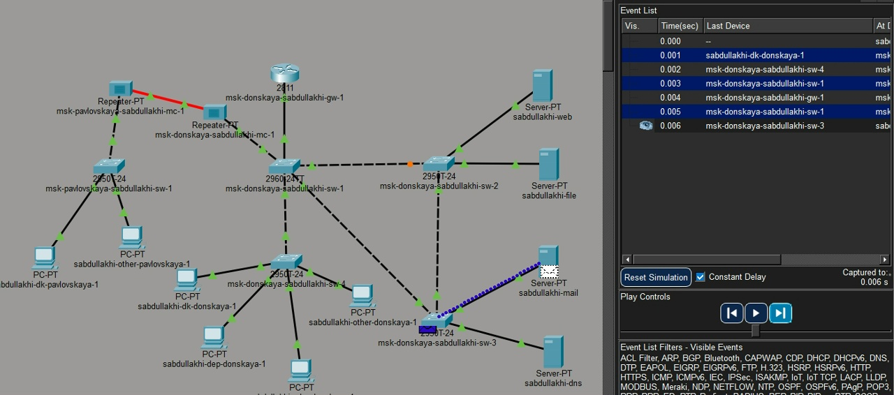
Движение ICMP-пакетов через
msk-donskaya-sabdullakhi-sw-4
Просмотр состояния
протокола STP для VLAN 3
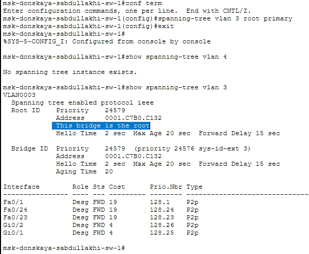
Настройка msk-donskaya-sabdullakhi-sw-1
как корневого
Изменение
маршрута ICMP-пакетов после смены корневого моста
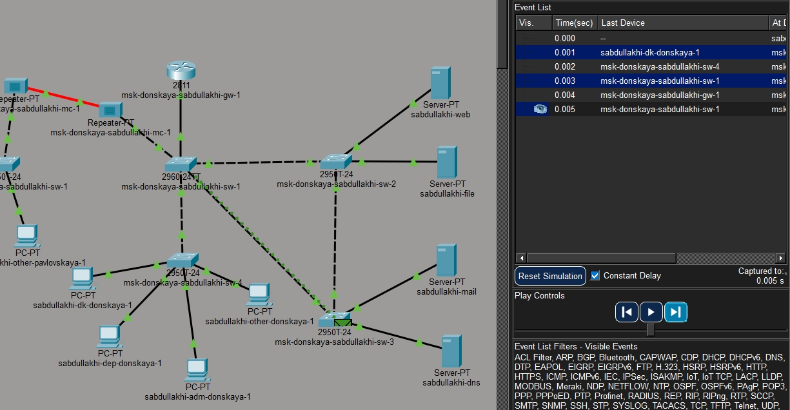
Топология sabdullakhi-mail
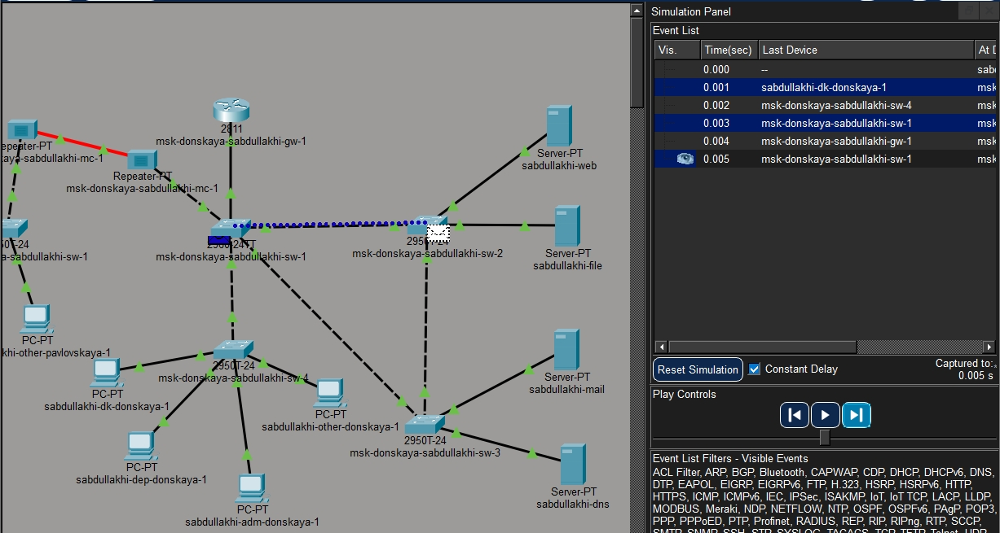
Топология sabdullakhi-web
Настройка режима
PortFast на серверных портах
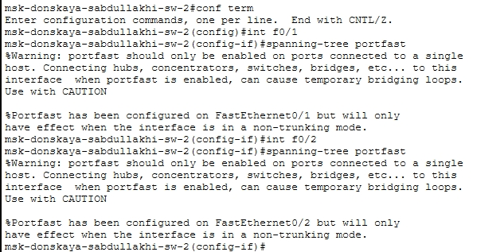
Настройка PortFast на
msk-donskaya-sabdullakhi-sw-2
Настройка
PortFast на msk-donskaya-sabdullakhi-sw-3
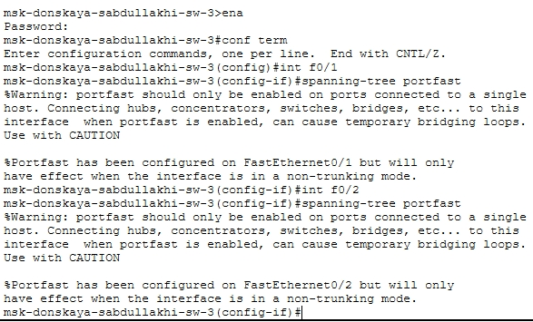
Настройка PortFast на
msk-donskaya-sabdullakhi-sw-3
Проверка
отказоустойчивости классического STP
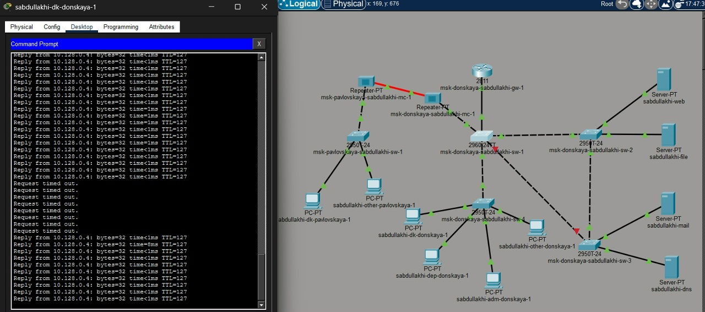
Проверка отказоустойчивости
STP
Перевод коммутаторов в
режим Rapid PVST+
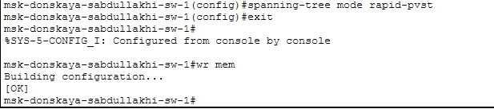
Перевод sw-1 в режим Rapid
PVST+
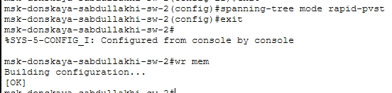
Перевод sw-2 в режим Rapid
PVST+
Проверка
отказоустойчивости Rapid PVST+
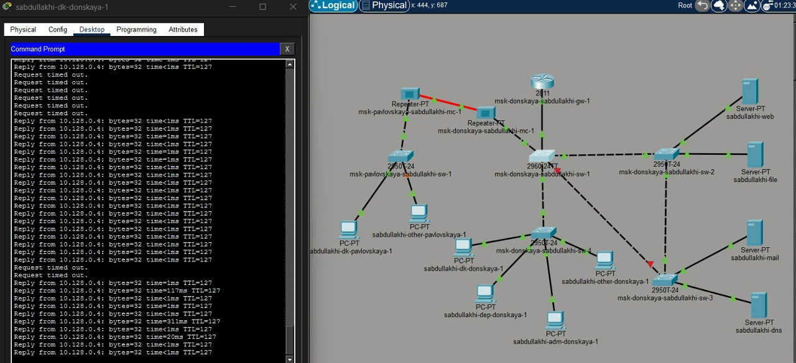
Проверка работы сети при использовании
Rapid PVST+
Настройка
EtherChannel на коммутаторе msk-donskaya-sabdullakhi-sw-1
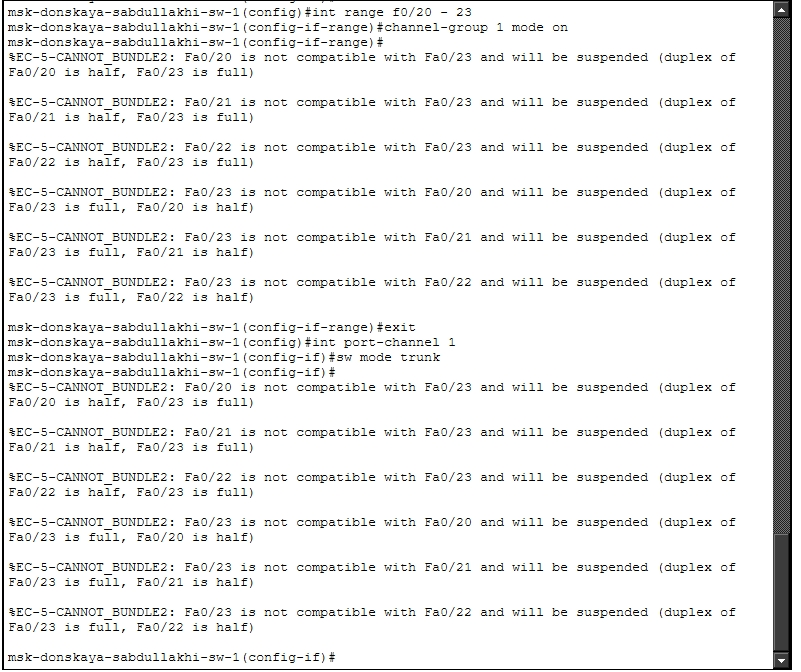
Настройка EtherChannel на
msk-donskaya-sabdullakhi-sw-1
Настройка
EtherChannel на коммутаторе msk-donskaya-sabdullakhi-sw-4
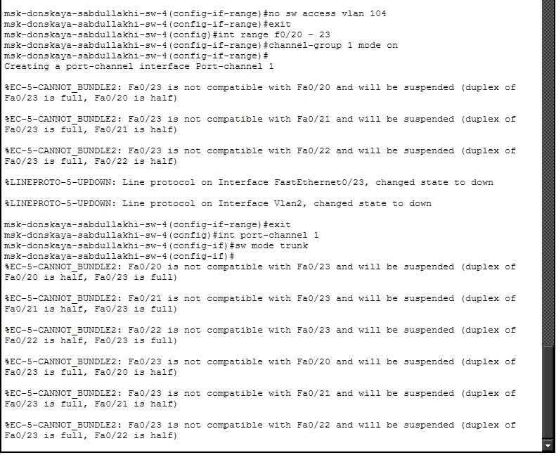
Настройка EtherChannel на
msk-donskaya-sabdullakhi-sw-4
Сформированное
агрегированное соединение между коммутаторами
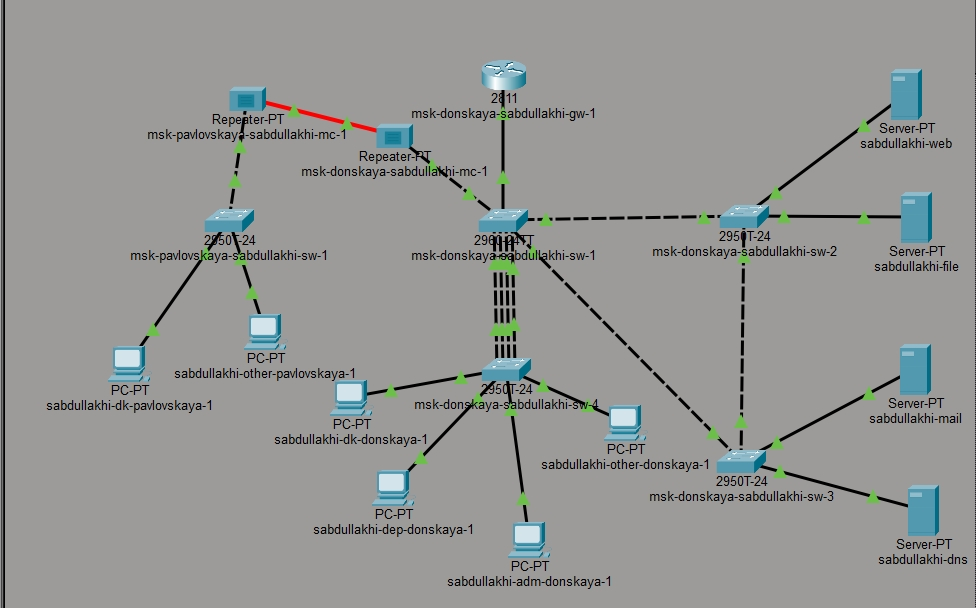
Сформированное агрегированное соединение
между коммутаторами
Успешная
проверка соединения после настройки EtherChannel
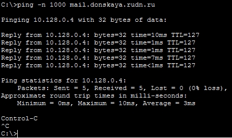
Успешная проверка соединения после
настройки EtherChannel
Вывод
В ходе работы организовано резервное соединение между sw-1 и sw-3.
Изучен протокол STP, проведена смена корневого коммутатора. На серверных
портах настроен PortFast. Классический STP восстанавливается за 30–50 с,
Rapid PVST+ — за 1–3 с. Настроен EtherChannel между sw-1 и sw-4.
Построена отказоустойчивая сеть с быстрым восстановлением.